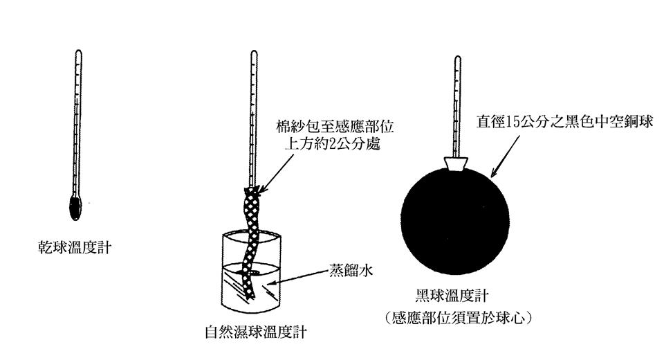

- 一般簡介
- 高溫誘發之疾病
- 熱暴露而誘發之疾病
- 綜合溫度熱指數量測設備
- 熱舒適性的定義
一般鋼鐵、玻璃、陶瓷、鋁冶煉、鑄造等高溫作業產業，常能提供民眾日常生活所需之產品，但由於高溫熱量而使員工身處於高危害之環境。為了防止高溫作業所引起之危害，我國勞工安全衛生法對於高溫作業場所之勞工，特別規範其作息時間標準，明定該場所之每日工作時間不得超過六小時及在特定的綜合溫度指數（Wet Bulb Globe Temperature, WBGT）之下，從事輕、中度、重工作時，實際作業及休息時間應有一定之配合如表1所示，在此標準中所稱輕工作，指僅以坐姿或立姿進行手臂部動作以操縱機器者；所稱中度工作，止於走動中 提舉或推動一般重量物體者；所稱重工作，只鏟、掘、推等全身運動之工作者。在高溫作業環境下，人體必須藉著排汗來促進體熱之排除，避免體熱增加而使體溫上升；若在該環境工作，則不只是要應付環境熱，同時要設法排除工作本身產生之代謝熱，此時熱調節機能及心臟血液循環系統必須更為有效，否則心跳和體溫會持續上升而危及生命，因此，高溫作業之下，必須對環境熱壓力、工作負荷及員工生理反應同時兼顧。
- 熱衰竭是因大腦皮質血液供應不足造成的一種虛脫狀態。為維持人體之恆定性，人體遭受熱危害而使血管擴張所致。
- 熱痙攣是一種隨意肌引起的痙攣，這種現象係發生於血內氯化鈉濃度過低所引起的。氯化鈉大量損失的原因是由於出汗過多所致；喝大量的水，亦會把餘存於體內的鹽分稀釋。
-
中暑乃因平均體溫高至危及若干生命組織繼續發揮功能所致,其顯示體溫調節機制嚴重失能而無法適當的維持熱平衡。一般中暑有三大主要症候：
- 皮膚熱而乾、發紅、有雜色斑點或呈現淺藍色。
- 體溫常高到41℃或以上，並有繼續上升之勢。
- 患者有精神錯亂、譫妄、神志衰失、驚厥和昏迷現象。
| 健康危害 | 原因 | 症狀或徵候 | 急救處理 |
|---|---|---|---|
| 熱痙攣 | 大量流汗，致使鹽分過度流失。 | 肌肉疼痛性的痙攣，體溫仍正常或稍低。 | 適當休息，給予生理食鹽水。輕微按摩痙攣部位。 |
| 熱衰竭 | 心血管功能不足，大量失水(脫水)引起虛脫現象。 | 極度疲勞、頭痛、臉色蒼白、眩暈、心跳快而弱，體溫正常或稍高，失去知覺。 | 陰涼且通風場所休息，採頭低腳高姿勢仰臥，按摩四肢，並注意體溫及生命現象。 |
| 熱中暑 | 體溫調節機制失能，無法維持體溫平衡。 | 通常停止流汗，皮膚乾熱、潮紅，體溫急劇昇高，脈博快而強烈。 | 利用冰水或酒精擦拭或浸泡，迅速降低體溫，必要時脫去衣物，但要注意維持體溫並送醫急救處理。 |

可以讓一個人的感到滿意的熱環境。由於人的 感覺涉及主觀因素，欲以量化方式評估熱舒適性，勢必需要使用統計方法將主觀 感覺與相關生理反應建立經驗關係。熱環境指標(Thermal Environmental Index) 即是用以評估人體在不同溫度下配合其他環境因素的冷熱感覺或生理反應。現行 熱環境指標不下數十種之多。基本上，這些指標都是將數個影響冷熱感覺或生理 反應的參數綜合於一變數，此變數即為指標。為保護其作業勞工之安全與衛生， 已有甚多文獻推薦不同方法用來評估勞工熱暴露劑量之指標。文獻中常用之熱環境評估指標有：
綜合溫度熱指標(WBGT)

其中Tnw 為自然濕球溫度，Tna為自 然乾球溫度，Tg則為黑球溫度。綜合溫度熱指數被美國職業安全衛生 研究所(NIOSH)、美國政府工業衛生專業人員協會(ACGIH)、國際標準組織(ISO)、 美國職業安全衛生署(OSHA)、美國工業安全衛生協會(AIHA)等建議採用之標準規範，亦為我國現行法規採用之評估方法。
綜合溫度熱指標(WBGT)
其中Tnw 為自然濕球溫度，Tna為自 然乾球溫度，Tg則為黑球溫度。綜合溫度熱指數被美國職業安全衛生 研究所(NIOSH)、美國政府工業衛生專業人員協會(ACGIH)、國際標準組織(ISO)、 美國職業安全衛生署(OSHA)、美國工業安全衛生協會(AIHA)等建議採用之標準規範，亦為我國現行法規採用之評估方法。